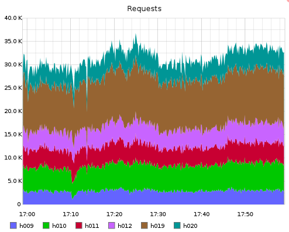
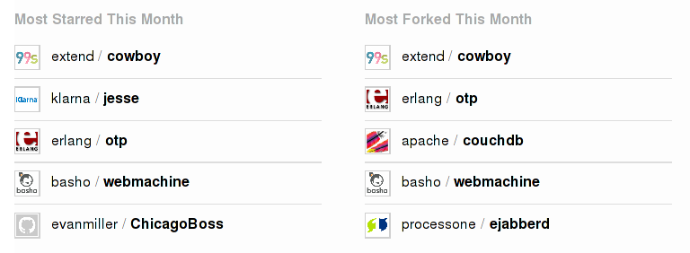

The new Cowboy
Le Cowboy nouveau est arrivé !
Loïc Hoguin - @lhoguin
Erlang Cowboy and Nine Nines Founder
The Cowboy guy
Fact 1
- I know you but I forgot your name or face, remind me!
Fact 2
- Not drinking alcohol, offer me a coke, not a beer!
Fact 3
- I forget my hat all the time. :(
The road so far
Beginnings
- Unsatisfied with existing solutions
- Wanted a mix of Webmachine and Misultin
- With binaries
- And dynamic "listeners"
- And some icing on top
- First commit on March 7th 2011
Initial goals
- Binary
- Dynamic listeners
- Low latency and memory usage
- One Erlang process per connection
- Small codebase
- Clean Erlang code
Initial reactions
- Encouraging
- Community started growing slowly
- People started recommending Cowboy to others
- First Cowboy talk at EUC 2011 had a full room
Misultin's help
- Great project
- Still unmatched in usability
- Development stopped in favor of Cowboy
- Boosted Cowboy's adoption
- My thanks go to Roberto Ostinelli
The road to stable
- Few changes for about 6 months
- Spent a lot of time figuring things out
- Then spent a lot more time getting things done
- A few improvements remain to be done
Recent changes
Mascot
New goals
- Complete HTTP stack
- Complete support for the modern web
- Good documentation
- Stable version
- Target non-Erlang developers
New conventions
- Everything is a binary, including method and header names
- HTTP header names are lowercase
- cowboy_http_req -> cowboy_req
- cowboy_http_* -> cowboy_*
HTTP
- Improved HTTP/1.1 and HTTP/1.0 support
- Built-in response compression
- Built-in parsing of HTTP headers
- Much faster request body streaming code
- Properly detect socket close in long-polling
HTTP Req
- Normalized cowboy_req API
- Access: {Value, Req}
- Action: {Result, Req} | {Result, Value, Req} | {error, atom()}
- Modification: Req
- Question: boolean()
Websocket
- Fully passes the Autobahn test suite
- Much faster at processing frames
- Text frames now required to be valid UTF-8
REST
- Better error reporting
- PATCH method support
- Still experimental, no documentation
- Widely adopted by users
More powerful routing
- Routes must now be compiled
- Nicer string-based syntax
- Constraints: apply functions on bound values
- Allows distinguishing between these two:
- /api/42/add
- /api/blue/add
Middlewares
- Hook code at any point in request handling
- Replace routing or handling components of request processing
- Not WSGI
- WSGI: data centric, chain request, then reverse chain response
- Cowboy: chain of execution, only chain request, response happens at any point
Documentation
- Cowboy now has a guide!
- Still many improvements can be made
- Feedback needed
Focus on performance
Improvements

Testing in production
- Synthetic benchmarks don't help
- Most interesting results are under heavy load
- Users' production systems are the best benchmark
- The PROWESS Project might deliver benchmarking tools later on
NIFs and BIFs
- NIFs considered harmful
- BIFs can be harmful too!
- BIF doesn't mean "fast" or "scheduler friendly"
Example of BIFs killing scalability
- erlang:decode_packet/3
- binary:match/2
- lists:length/1
- ...
Performance tips
- Measure, measure, measure
- Don't assume something is faster, measure it
- Optimize the critical code path
- Don't waste your time on code that is rarely ran
Project status
Actively developed
- Cowboy is Nine Nines' main product
- Cowboy is the central project of a family
- Cowboy is key to Nine Nines' future SaaS solution
Popular

Many contributors
- Exponential growth
- More than 50 total contributors in 2 years
- Half of them over the past 9 months!
- 470+ total tickets
- 200+ total pull requests
Many success stories
- Kóði for realtime financial market data streaming
- 2600Hz in Kazoo, their telecom platform
- Heroku for Logplex, a high-performance, realtime system for log delivery
- Linden Lab for Versu, an interactive storytelling platform
- BLOOM for AdGear, their realtime ad bidding system
More success stories
- jtendo.com for a dynamic mobile provisioning system
- Tambur.IO for realtime web and mobile messaging PaaS
- Unison for realtime collaborative environment
- LeChat.im for their realtime team chat system
- Others: TV, Sports, Set-top boxes, ...
Success story template
- Service needs high-performance, realtime capabilities
- Service is using HTTP either directly or for inter-connecting systems
- Service needs a REST API and Websocket support
- Service may be used for web or mobile applications
- Bonus points for gaming related projects
Many open source projects
- Compatible web frameworks: Nitrogen, ChicagoBoss, axiom...
- Open source users:
- RabbitMQ
- LeoFS
- Project-FiFo
- Ybot
- fipelines
- Bigwig (needs a maintainer!)
Repository of Cowboy applications
- Chapter in the guide for listing Cowboy applications
- Please open pull requests to add your project
Related projects
Ranch
- Listener and acceptor code spin-off from Cowboy
- Supervises connections automatically
- Abstracts transport and protocol code
- Can be embedded into your own supervision tree
Bullet
- Cowboy handler
- Websocket-like behavior on all browsers
- Permanent connection, reconnects on failure
Farwest
- A mix of web framework and CMS
- Gives users autonomy to build and manage Erlang web applications
- First alpha version just released!
- Huge amount of development needed
- Bountysource.com Farwest fundraiser just started
LeoFS
- The Lion of storage systems
- Distributed file system compatible with Amazon S3 API
- Powered by Cowboy
- Focuses on high throughput instead of latency
Future works
Remaining API breaking changes
- Improved POST handling in REST
- Improved request body reading
- Removal of cowboy_req:peer_addr/1
Connections supervisor
- Duplicate work with 'max_connections' related monitors
- Overhead on creation and especially termination
- Custom supervisor can fill in both roles
- Makes other optimizations possible
SPDY
- Asynchronous, fully compressed, binary HTTP
- One process per connection + one process per request
- Same code for HTTP and SPDY requests
- Headers in SPDY are lowercase too, no conversion needed
Complete HTTP support
- Parsing code for all standard HTTP headers
- Allow users to build any HTTP compatible technology on top of Cowboy
- Support for Websocket extensions
- Support for SPDY based HTTP/2.0 when implementations come out
Version 1.0
- All of the above
- Stable API
- Fully documented
- Work won't stop there!
Getting help
Community support
- #ninenines on Freenode
- Mailing list on http://ninenines.eu
Consulting and commercial support
- Hourly remote or on-site consulting
- A la carte commercial support
- Specific developments
- System optimization
- Code reviews
- On-call support
- For both Erlang and Cowboy
Getting involved
Contributing
- Tell me where you use Cowboy and for what
- Send me graphs showing how new Cowboy versions improve things
- Report bugs on Github
- Send patches, see CONTRIBUTING.md file
Sponsoring
- Gives you visibility
- Gives us a budget
The Cowboy book
- The Bible of writing web applications with Erlang and Cowboy
- Accessible by people who never programmed Erlang
- Goes into and explains advanced web development concepts
- Published online for free as it is written
- Hard-copy will be released when the book is completed
One more thing
Hello, Joe
- Cowboy will make an appearance in Programming Erlang 2nd Edition!
Contact info
- IRC: essen on #erlang or #ninenines on Freenode
- Twitter: @lhoguin
- Sales: contact@ninenines.eu